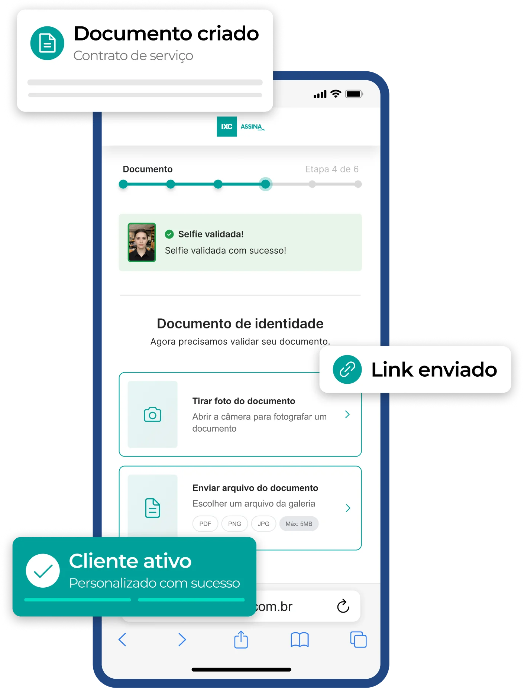

Crie, envie e acompanhe contratos digitais com validade jurídica.
Envie contratos por WhatsApp ou e-mail e permita que o cliente assine pelo celular, computador ou tablet.
Elimine impressão, deslocamentos e coleta manual de assinaturas de forma simples e 100% eletrônica.
Acompanhe cada documento em tempo real e saiba exatamente em que etapa do fluxo de assinatura ele está.
Veja como o fluxo simplificado otimiza o dia a dia da sua operação comercial.
Direto na plataforma ou integrado ao IXC Provedor.
Compartilhe o documento por WhatsApp ou e-mail.
A assinatura pode ser feita pelo celular, computador ou tablet.
Visualize o histórico completo das atividades através do painel.
Contrato assinado e cliente pronto para a ativação.
Quando integrado ao IXC Provedor, o IXC Assina automatiza a etapa seguinte da contratação. Assim que o contrato é assinado, o processo de ativação pode seguir automaticamente, reduzindo tarefas manuais e acelerando a instalação do cliente.
Testar agoraIXC Provedor
IXC Assina
Visualize documentos por status, acompanhe históricos completos, filtre informações por período ou origem e organize permissões por equipes e usuários.

Cada assinatura reúne evidências que comprovam autenticidade, integridade e rastreabilidade do processo, seguindo os requisitos da Lei nº 14.063/2020 para assinaturas eletrônicas avançadas.
Suporte a assinaturas qualificadas com a tecnologia oficial de chaves públicas brasileira.
Validação biométrica ativa que garante que o signatário é uma pessoa real no momento da assinatura.
Confronto de imagens para comprovação precisa de identidade associada ao documento assinado.
Rastreamento completo do local, endereço IP e máquina utilizados para registrar o aceite.
Arquivos protegidos com criptografia de ponta e backups redundantes em nuvem segura.
Crie contratos digitais, acompanhe assinaturas em tempo real e automatize etapas da contratação com integração ao IXC Provedor.
Comece agora mesmo